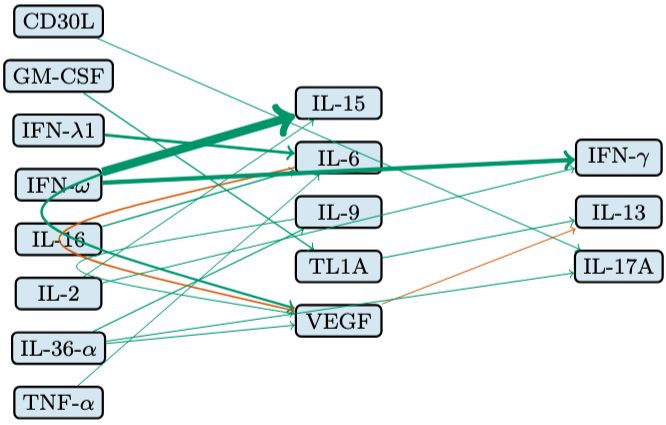

Five years of it, in places where the decision mattered.
Finishing my MSc thesis, validated at 83-100% accuracy across real-world datasets,
Recognized among the top 1% of the Hebrew University's Master's students, with a 99 GPA.
Developing a way to recover how systemic programs unfold over time from a single static snapshot, no time-course experiments required.

The Hebrew University of Jerusalem, graduate study moving toward independent thesis research.
Three years of predictive modeling at the Israeli Prime Minister's Office close.
Graduated Computer Science at The Open University of Israel, 90 GPA, with Dean's List honors in three of the four years.
Honored by the Israeli Prime Minister's Office for outstanding impact within the Data Mining & Analysis research department.
Israeli Prime Minister's Office, owned predictive-model development end-to-end for stakeholders across sociology, economics and intelligence.
The Open University of Israel, four years of study, most of them alongside full-time research work.
Open to data science, ML research and product roles, and to conversations about any of the above.